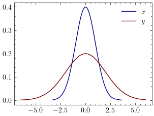
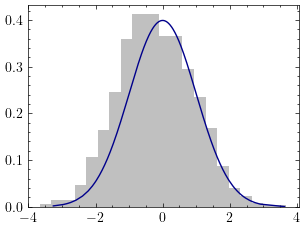
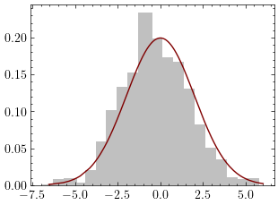
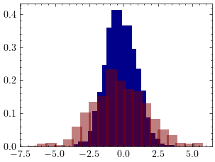
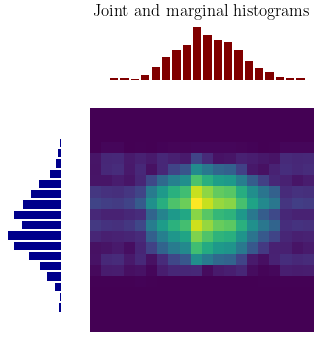
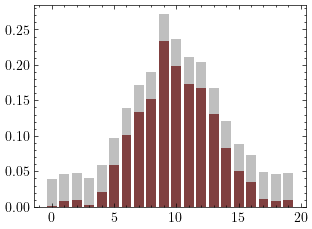
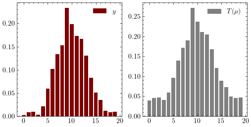
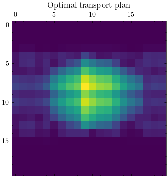

Discrete optimal transport addresses the problem of redistributing mass between discrete distributions. In this blog, we will show how the discrete optimal transport problem can be reduced to a linear program. Then we will show how to solve the linear programming problem practically.
Discrete probability measures
Let \(X\) and \(Y\) be two discrete measures in the probability spaces \((\Omega_{X}, F_{X}, \mu)\) and \((\Omega_{Y}, F_{Y}, \nu)\).
$$\mu(x) = \sum_{z \in \Omega_{X}} \mu(z) I_{x}(z)$$
The measure of the set \(x\) is the sum of the measures of all the \(z \in \Omega_{X}\) such that \(z \in x\).
similarly
$$\nu(y) = \sum_{z \in \Omega_{Y}} \nu(z) I_{y}(z)$$
with
$$\sum_{x \in \Omega_{X}} \mu(x) = 1$$
and
$$\sum_{y \in \Omega_{Y}} \nu(y) = 1$$
Optimal transport for discrete distributions
the optimal transport problem for discrete distributions is
$$ \begin{align} \text{min} \big\{ \sum_{X\text{x}Y}c_{T}(x,y) \gamma(x,y) : \gamma(x,y) \in \Gamma(x,y) \big\} \end{align} $$If \(X\) is defined in \(\Omega_{X} = [1, 2, \ldots N]\) and \(Y\) is defined in \(\Omega_{Y} = [1,2, \ldots, M]\). We note \(\mu_i\) the mass of \(i\) in \((\Omega_{X}, F_{X}, \mu)\) and \(\nu_{i}\) the mass of \(i\) in \((\Omega_{Y}, F_{Y}, \nu)\).
The optimal transport problem from \(X\) to \(Y\) is
$$ \begin{align} \text{min} { \sum_{1 \leq i \leq n, 1 \leq j \leq m}c_{i, j} \gamma_{i,j} : \gamma \in \Gamma(X,Y) } \end{align} $$
This can be rewritten as
$$ \begin{align} \text{min} { \sum_{1 \leq i \leq n, 1 \leq j \leq m}(C \circ \gamma)_{i,j} } \end{align} $$
where \(\circ\) is the hadamard product.
Let note vec the operation of vectorizing a matrix by stacking its row vectors. If vec\((C)\) is the vectorization of \(C\) and vec\((\gamma)\) is the vectorization of \(\gamma\) then we have
$$ \begin{align} \text{min} { < \text{vec}(C), \text{vec}(\gamma)> : \Sigma_{j=1}^{n}\gamma_{i,j} = \mu_{i}\text{, and } \Sigma_{i=1}^{n}\gamma_{i,j} = \nu_{j} } \end{align} $$
where \(<,>\) is the dot product.
let \(z\) = vec\((\gamma)\) and \(c\) = vec\((C)\)
$$ \begin{align} \text{min} { <c, z> : \Sigma_{j=1}^{m}\gamma_{i,j} = \mu_{i}\text{, and } \Sigma_{i=1}^{n}\gamma_{i,j} = \nu_{j} } \end{align} $$
$$ \begin{array}{ccc} (I_{M} \otimes 1_{1\text{x}N})z & = & \left[\begin{array}{c c c c c} [1 \ldots 1] & & & & & \\ & \ddots & & & \\ & & [1 \ldots 1] & & & \\ & & & \ddots & \\ & & & & [1 \ldots 1] \\ \end{array}\right] \\ & = & \left[\begin{array}{c} z_{1,1} \\ \vdots \\ z_{1,N} \\ \vdots \\ z_{i,1} \\ \vdots \\ z_{i,N} \\ \vdots \\ z_{M,1} \\ \vdots \\ z_{M,N} \\ \end{array}\right] \\ & = & \left[\begin{array}{c} \Sigma_{j=1}^{N}z_{1,j}\\ \vdots \\ \Sigma_{j=1}^{N}z_{i,j}\\ \vdots \\ \Sigma_{j=1}^{N}z_{M,j}\\ \end{array}\right]\\ & = & \mu \\ \end{array} $$
where \(\otimes\) is the kronecker product, and
$$ \begin{array}{ccc} (1_{1\text{x}M} \otimes I_{N})z & = & \left[\begin{array}{c c c c c} \left[\begin{array}{ccc} 1 & & \\ & \ddots & \\ & & 1\\ \end{array}\right] & \cdots & \left[\begin{array}{ccc} 1 & & \\ & \ddots & \\ & & 1\\ \end{array}\right] & \cdots & \left[\begin{array}{ccc} 1 & & \\ & \ddots & \\ & & 1\\ \end{array}\right] \end{array}\right]\\ & = & \left[\begin{array}{c} z_{1,1} \\ \vdots \\ z_{1,N} \\ \vdots \\ z_{i,1} \\ \vdots \\ z_{i,N} \\ \vdots \\ z_{M,1} \\ \vdots \\ z_{M,N} \\ \end{array}\right]\\ & = & \left[\begin{array}{c} \Sigma_{i=1}^{N}z_{i,1}\\ \vdots \\ \Sigma_{i=1}^{N}z_{i,j}\\ \vdots \\ \Sigma_{i=1}^{N}z_{i,M}\\ \end{array}\right]\\ & = & \nu \\ \end{array} $$
So we have
$$(I_{M} \otimes 1_{1\text{x}N})z = \mu$$
and
$$(1_{1\text{x}M} \otimes I_{N})z = \nu$$
In matrix form, we have $$ \begin{array}{ccc} \left[ \begin{array}{c} I_{m} \otimes 1_{1\text{x}n}\ 1_{1\text{x}m} \otimes I_{n} \end{array} \right] z & = & \left[ \begin{array}{c} \mu\ \nu \end{array} \right] \end{array} $$
Let’s note \(A = \left[ \begin{array}{c} I_{m} \otimes 1_{1\text{x}n}\ 1_{1\text{x}m} \otimes I_{n} \end{array} \right]\) and \(b=\left[\begin{array}{c}\mu \\ \nu \end{array}\right]\)
The equation above becomes \(Az=b\)
Thereforce the following optimal transport problem $$ \begin{align} \text{min} { <c, z> : z \geq 0, Az = b} \end{align} $$
can be reduced to a linear program $$ \begin{align} \text{min} { <c, z> : z \geq 0, Az \leq b} \end{align} $$
Libraries to import
import numpy as np
from scipy import stats
import matplotlib.pyplot as plt
plt.rcParams['text.usetex'] = True
plt.style.use("science")
import cvxpy as cp
import math
import matplotlib
from matplotlib.gridspec import GridSpec
Generate a problem
Let’s generate two random gaussian distributions.
Generate n samples from \(N(0,1)\)
n = 1000
x = np.random.randn(n)
x.sort()
fx = stats.norm.pdf(x)
Generate m samples from \(N(0, \sqrt(2))\)
m = 1000
y = 2. * np.random.randn(m)
y.sort()
fy = stats.norm.pdf(y, 0., 2.)
Distributions of \(X\) and \(Y\)
def plot_dist(x, fx, y, fy):
fig, axis = plt.subplots()
axis.plot(x, fx, color = "darkblue", label = "$x$")
axis.plot(y, fy, color = "maroon", label = "$y$")
plt.legend()
plt.show()
plot_dist(x, fx, y, fy)

Discretize \(x \sim X\) and \(y \sim Y\)
Let’s discretisize the generated distributions.
# Discretize x using the histogram
# returns the normalized histogram and the lower limits of the intervals
def discretize(x, nbins, normalize = True):
freq, inter = np.histogram(x, nbins)
inter = inter[:-1]
freq = freq.astype(np.float32)
width = inter[1] - inter[0]
n = x.size
if normalize:
freq /= (width * n)
return freq, inter
N = 20
M = 20
freq_x, inter_x = discretize(x, N)
plt.bar(inter_x, freq_x, color = "silver")
plt.plot(x, fx, color = "darkblue")
plt.show()

freq_y, inter_y = discretize(y, M)
plt.bar(inter_y, freq_y, color = "silver")
plt.plot(y, fy, color = "maroon")
plt.show()

Distributions of \(X\) and \(Y\)
plt.bar(inter_x, freq_x, color = "darkblue")
plt.bar(inter_y, freq_y, color = "maroon", alpha = 0.5)
plt.show()

Solving the OT problem
The linear program for optimal transport involves defining the linear objective function, and the constraints.
Let \(\mu\) be the distribution (histogram) of \(X\) and \(\nu\) be the distribution (histogram) of \(Y\)
mu = freq_x
nu = freq_y
Forming the matrix b
b = np.concatenate((nu, mu))
b.shape
(40,)
Forming the matrix A
Amu = np.kron(np.identity(M), np.ones(N))
Amu.shape
(20, 400)
Anu = np.kron(np.ones(M), np.identity(N))
Anu.shape
(20, 400)
A = np.concatenate((Amu, Anu), 0)
A.shape
(40, 400)
Solving the linear programming problem using CVXPY
The variable z is the vectorized transportation matrix \(\gamma\).
z = cp.Variable(M * N)
The loss function is the mean squared error
obj = cp.Minimize(cp.sum_squares(A @ z - b))
\(z\) is the vectorized coupling of \(\mu\) and \(\nu\) must be positive.
constraints = [z >= 0]
problem = cp.Problem(obj, constraints)
res = problem.solve()
The minimum risk (mean squared error) is
res
0.047973478298571876
Let’s reshape z back to a matrix of size M x N
Z = z.value.reshape(M, N)
the map of \(\mu\) by the transportation map \(T\) is \(T(\mu) = \sum_{j} \gamma_{ij}\). It should be as close as possible to the target distribution \(\nu\).
tmu = Z.sum(1)
tmu.shape
(20,)
Visual checking
The optimal transport map between \(\mu\) and \(\nu\)
def plot_map(filename = ""):
fig = plt.figure(figsize=(4, 4))
gs = GridSpec(2, 2, width_ratios=[1, 4], height_ratios=[1, 4])
ax1 = plt.subplot(gs[1])
ax1.bar(range(M), nu, color = "maroon")
ax1.axis("off")
ax2 = plt.subplot(gs[2])
ax2.barh(range(N), mu, color = "darkblue")
ax2.invert_xaxis()
ax2.axis("off")
ax3 = plt.subplot(gs[3])
ax3.imshow(Z.transpose())
ax3.axis("off")
if filename != "":
plt.savefig(filename)
ax1.set_title("Joint and marginal histograms")
plt.show()
plot_map("../_figures/linear_program")

The target distribution \(\nu\) and the optimal transport map of \(\mu\)
plt.bar(range(M), nu, color = "maroon")
plt.bar(range(M), tmu, color = "grey", alpha = 0.5)
plt.show()

\(T(\mu)\) and \(\nu\) have the same shape. Let’s draw them side by side.
fig, axes = plt.subplots(1, 2, figsize = (6, 3))
axes[0].bar(range(M), nu, color = "maroon", label = "$y$")
axes[0].legend()
axes[1].bar(range(M), tmu, color = "grey", label = "$T(\mu)$")
axes[1].legend()
plt.show()

plt.matshow(Z.transpose())
plt.title("Optimal transport plan")
plt.show()

References
- Gabriel Peyré, Marco Cuturi, Computational Optimal Transport